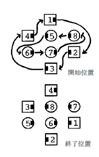
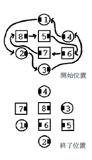

この動作は１/４タッグ隊形に始まり、１/４タッグ隊形で終わる。 それぞれのダンサーはCirculate（サーキュレイ ト）、すなわち、図１に示す軌道に沿って位置を一つ前進する。 中心が左手のウエイブである場合もまたコール 可能で、この場合は、Circulate（サーキュレイト）の軌道を図２に示す。
Circulate（サーキュレイト）の軌道は互いに独立していることに注意すべきである。 したがって、外側の軌道に いる人のみ（図１及び２の１、２、３、４番のダンサー）がPing Pong Circulate（ピンポン サーキュレイト）でき、内側 の軌道にいる人のみ（図１及び２の５、６、７、８番のダンサー）がPing Pong Circulate（ピンポン サーキュレイト） できる。
 
© 版権 1997, 2001-2014 CALLERLAB、スクエアダンスコーラー国際協会。 再印刷、再発行、使用料の 発生しない写物製作はこの文章表示を条件にこれを許可する。 使用料の発生しないインターネットでの刊行 はこの文章表示を条件にこれを許可する。 使用料の発生しない一部または全ての引用はこの文章表示を条件 にこれを許可する。 いかなる写物製作または刊行においても本書内の資料は変更されまた改訂されてはなら ない。